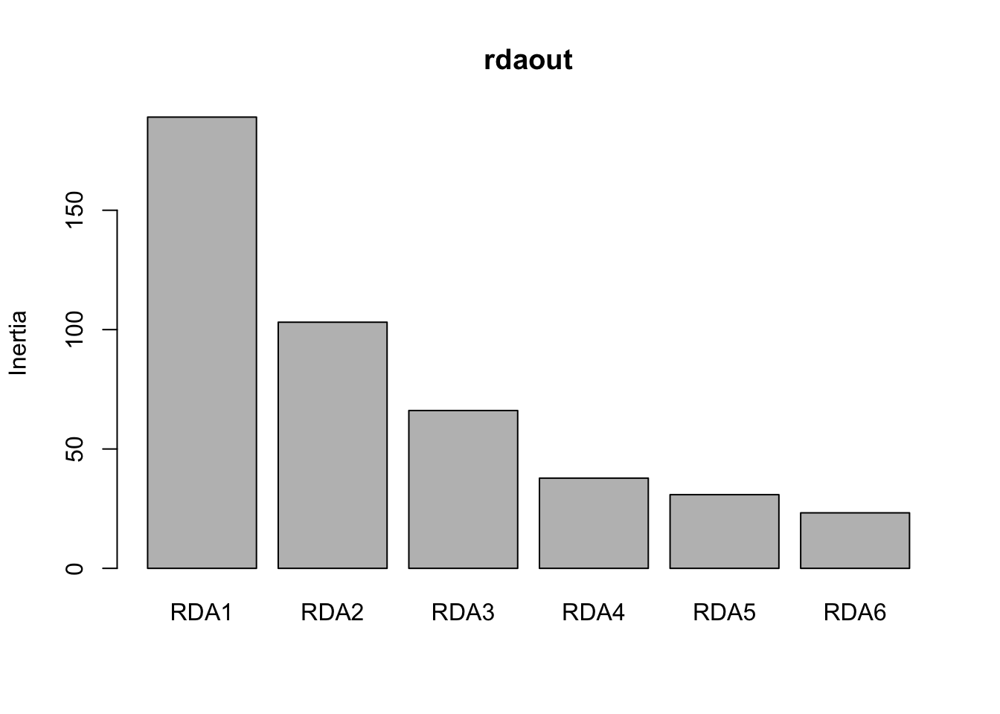
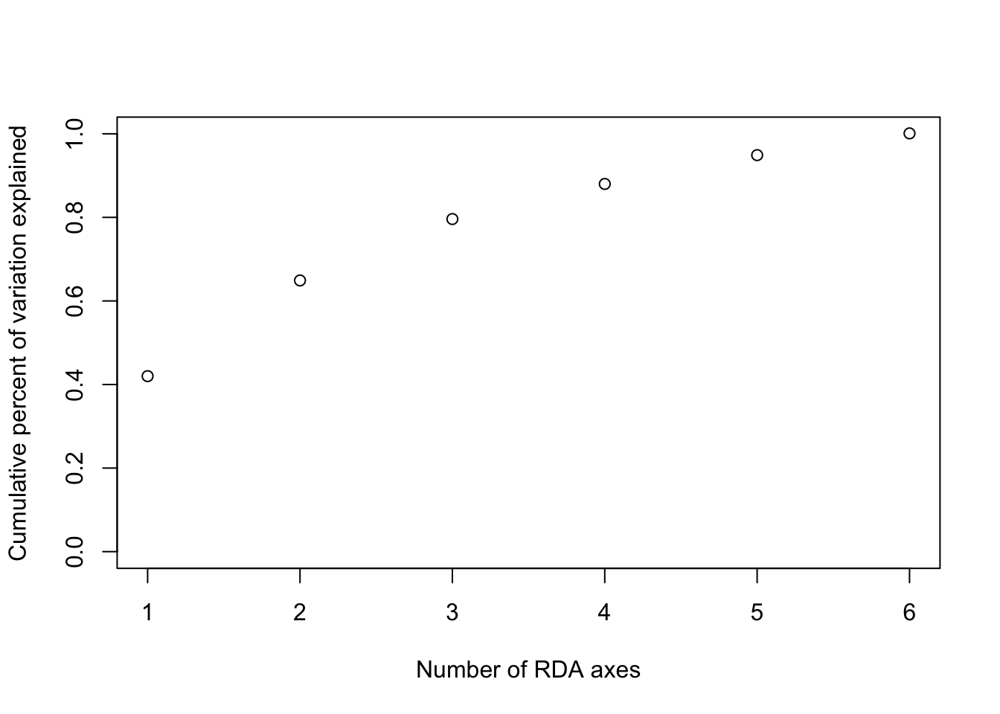
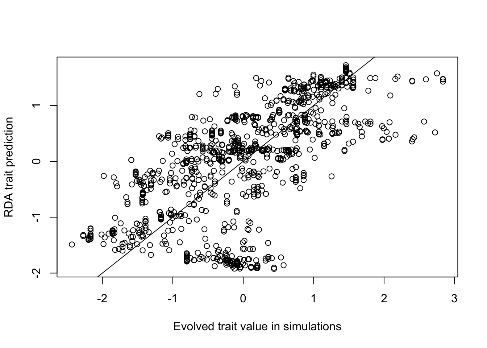
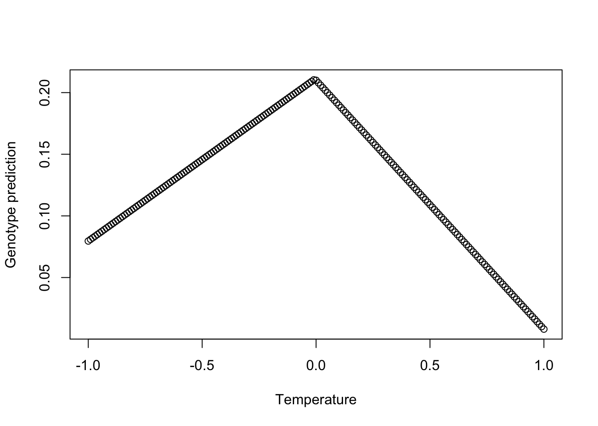
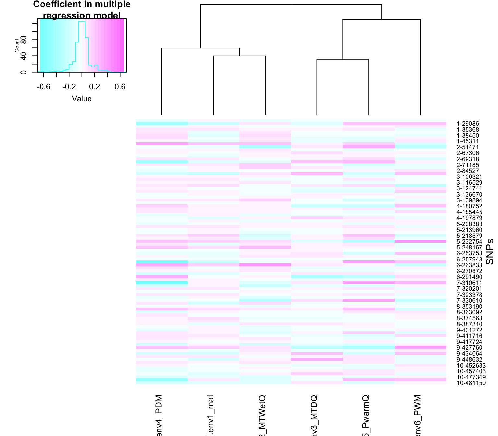
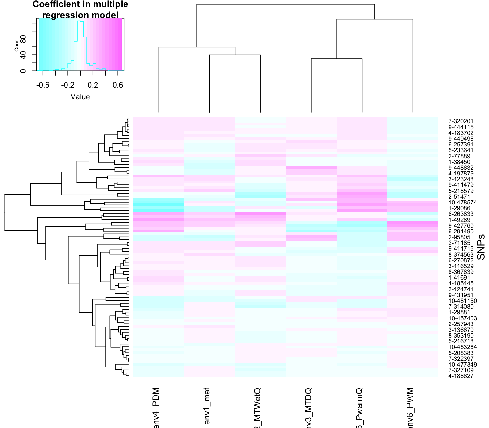

RDA trait prediction tutorial
KE Lotterhos
2023-02-08
This tutorial accompanies the paper “The paradox of adaptive trait clines with non-clinal patterns in the underlying genes” published in PNAS [add link].
Abstract
Multivariate climate change presents an urgent need to understand how species adapt to complex environments. Population genetic theory predicts that loci under selection will form monotonic allele frequency clines with their selective environment, which has led to the wide use of genotype-environment associations (GEAs). However, the accuracy of GEA methods to identify adapted loci is limited, as shown in the main paper.
This tutorial shows how to apply a novel extension of multivariate ordination, which accurately predicted individual multivariate traits from genotype and environmental data on simulated data regardless of whether inference from GEAs was accurate.
Install packages
If the following packages are not installed, be sure to install them first:
install.packages("vegan")
install.packages("lfmm")
install.packages("gplots")
if (!require("BiocManager", quietly = TRUE))
install.packages("BiocManager")
BiocManager::install("LEA")Load the libraries:
libraries_needed <- c("vegan", "LEA", "lfmm", "gplots")
for (i in 1:length(libraries_needed)){
library(libraries_needed[i],character.only = TRUE) #laptop
}
knitr::opts_chunk$set(message = FALSE, warning = FALSE, cache = TRUE) Don’t forget to set your working directory!
Background on the simulation
This data was simulated in SLiM and is associated with the complex multivariate simulation presented in Figure 6 in the paper. Briefly, a non-Wright-Fisher model was simulated on a landscape with 6 environmental variables that reflect different aspects of thermal stress and precipitation in British Columbia. The simulation included 6 environmental traits, each of which adapted to a different environmental variable.
The six environmental variables are based on real data from western Canada and are shown below, clockwise from upper right: Clockwise from upper left: precipitation of driest month, precipitation of warmest quarter, mean annual temperature, precipitation of wettest month, mean temperature of wettest quarter, mean temperature of driest quarter. Background colors correspond to the optimum trait value on each landscape, and each small square is a simulated individual, with its color representing its trait value in that environment.

Load the data
- A matrix of genotypes in 012 format (counts of reference allele)
- number of rows = number of individuals
- number of columns = number of SNPs
- A table with information about sampled individuals (each individual in a row)
- A table with information about SNPs (each SNP in a row)
The ind table includes the xy location for each
individual, the 6 exact trait values (note that these won’t exactly
equal the trait value calculated from the genotype matrix because of MAF
filtering), and the 6 environmental values at their xy location.
The muts table includes the linkage group
LG, the position of the mutation on the genetic map
pos_pyslim, a unique ID mutname, the allele
frequency based on the 1000 sampled individuals
a_freq_subset, and whether or not it had effects on one or
more phenotypes causal.
Note that you will have to change the working directory to where the data is stored on your computer.
G <- read.table(unz("POP_05_RDAtraitPredictionTutorial_files/Genotypes.txt.zip", "Genotypes.txt"))
dim(G) # 1000 individuals and 26371 loci## [1] 1000 26371ind <- read.table("POP_05_RDAtraitPredictionTutorial_files/Individuals.txt", header=TRUE)
dim(ind) #corresponds to rows in G## [1] 1000 15head(ind)muts <- read.table("POP_05_RDAtraitPredictionTutorial_files/SNPs.txt", header=TRUE)
dim(muts) #corresponds to columns in G## [1] 26371 5head(muts)rownames(G) <- as.character(paste0("i_",ind$ind_index))
colnames(G) <- as.character(muts$mutname)
#G <- as.matrix(G)
head(G[,1:10])RDA trait prediction function
This function predicts an environmental trait through the back-transformation of the RDA “site score” of an individual to a chosen environmental variable (Equation 1 in the manuscript). It makes the prediction for all the individuals that were used to run the RDA.
rda_trait_pred <- function(rdaobj, env_row, K){
#rdaobj is RDA object
#env_row is the row of the environment in the biplot output
#K is the number of RDA axes
scores <- scores(rdaobj, choices=1:K)
ind.sc <- scores$sites
pred <- matrix(NA, nrow=nrow(ind.sc), ncol=K)
for (k in 1:K){
pred[,k] <- ind.sc[,k]*eigenvals(rdaobj)[k]*summary(rdaobj)$biplot[env_row,k]
}
trait_pred <- scale(rowSums(pred))
return(trait_pred)
}Example of an RDA-predicted environmental trait value
- First, run the RDA:
Scale the environmental variables to have a mean of 0 and standard deviation of 1.
ind$env1_mat <- scale(ind$env1_mat)
ind$env2_MTWetQ <- scale(ind$env2_MTWetQ)
ind$env3_MTDQ <- scale(ind$env3_MTDQ)
ind$env4_PDM <- scale(ind$env4_PDM)
ind$env5_PwarmQ <- scale(ind$env5_PwarmQ)
ind$env6_PWM <- scale(ind$env6_PWM)
# Run the RDA
rdaout <- rda(G ~ ind$env1_mat +
ind$env2_MTWetQ +
ind$env3_MTDQ +
ind$env4_PDM +
ind$env5_PwarmQ +
ind$env6_PWM
)- Next, check the biplot output and decide how many RDA axes to use in the prediction.
# Check the biplot output
rdaout$CCA$biplot## RDA1 RDA2 RDA3 RDA4 RDA5
## ind$env1_mat -0.5004451 0.01863416 -0.5476147 0.54418964 -0.37298079
## ind$env2_MTWetQ 0.4523477 0.19158505 -0.8296969 -0.11392353 0.03132509
## ind$env3_MTDQ -0.7128197 -0.22757653 0.1200761 0.48309488 0.33816827
## ind$env4_PDM -0.3843437 0.04904761 0.8297919 -0.24744529 0.09707124
## ind$env5_PwarmQ 0.6524152 0.56221376 0.4505148 0.02427266 -0.04630498
## ind$env6_PWM 0.3209795 -0.05176393 0.7346369 0.19495732 -0.08780176
## RDA6
## ind$env1_mat -0.1186113
## ind$env2_MTWetQ -0.2373183
## ind$env3_MTDQ -0.2791780
## ind$env4_PDM -0.3011107
## ind$env5_PwarmQ -0.2292885
## ind$env6_PWM -0.5557731# Decide how many RDA axes to use in calculation
a<- screeplot(rdaout)
str(a)## List of 4
## $ x : num [1:6] 0.7 1.9 3.1 4.3 5.5 6.7
## $ y : num [1:6] 189 103.1 66.1 37.8 30.9 ...
## $ xlab: NULL
## $ ylab: NULL a$y # save this it's the eigenvalues## [1] 189.02481 103.10740 66.10749 37.79033 30.86247 23.24983 prop_var <- round(a$y[1:6]/sum(a$y),3)
cumsum(prop_var)## [1] 0.420 0.649 0.796 0.880 0.949 1.001 plot(cumsum(prop_var), xlab="Number of RDA axes",
ylab="Cumulative percent of variation explained", ylim=c(0,1))
- In this case, the first 3 RDA axes explain 80% of the variance. Note that choosing too many axes may result in overfitting. Here is an example of a trait prediction for MAT using the first 3 RDA axes:
# Make the trait prediction for MAT (1st row in biplot output)
K = 3 # use 3 RDA axes to make the trait prediction
MATtraitPredict <- rda_trait_pred(rdaout, 1, K)
# Since this is a simulation, we can compare the prediction to the true value
# Similarly, an empirical study could compare an empirically measured trait value
# to the RDA-predicted trait value to test how well landscape genomic data
# can predict functional traits
plot(scale(ind$phenotype1_mat), MATtraitPredict, xlab="Evolved trait value in simulations",
ylab="RDA trait prediction")
abline(0,1)
#Correlation between the prediction and the true value:
cor(ind$phenotype1_mat, MATtraitPredict) ## [,1]
## [1,] 0.6461756Compare to other functions in RDA
Note that the predict function and it’s variations in
the R package vegan do not make the same kind of
predictions as rda_trait_pred. Here are the types of
outputs produced by the function predict and its
variations:
# This option in the `predict` function outputs the scores for each locus in RDA space
loci_scores_predict <- predict(rdaout, type="sp", newdata=G, scaling=2)
str(loci_scores_predict)## num [1:26371, 1:6] -0.00957 -0.01685 -0.00659 0.08155 0.03396 ...
## - attr(*, "dimnames")=List of 2
## ..$ : chr [1:26371] "1-8" "1-27" "1-34" "1-81" ...
## ..$ : chr [1:6] "RDA1" "RDA2" "RDA3" "RDA4" ...# This option in the `predict` function outputs the fitted values from the multiple regression
# performed on each locus within each individual
fitted_values_predict <- predict(rdaout, newdata=G, type="response")
str(fitted_values_predict)## num [1:1000, 1:26371] 0.1031 0.0345 -0.0436 0.1821 0.1753 ...
## - attr(*, "dimnames")=List of 2
## ..$ : chr [1:1000] "i_33" "i_34" "i_44" "i_45" ...
## ..$ : chr [1:26371] "1-8" "1-27" "1-34" "1-81" ... # As a side note, it outputs the same thing as the `fitted` function
fitted_values_predict2 <- fitted(rdaout)
str(fitted_values_predict2)## num [1:1000, 1:26371] 0.1031 0.0345 -0.0436 0.1821 0.1753 ...
## - attr(*, "METHOD")= chr "PCA"
## - attr(*, "dimnames")=List of 2
## ..$ : chr [1:1000] "i_33" "i_34" "i_44" "i_45" ...
## ..$ : chr [1:26371] "1-8" "1-27" "1-34" "1-81" ...# This option in the `predict` function outputs the individual scores in RDA space
# based on a linear combination of the predictor variables
X <- data.frame(ind$env1_mat ,
ind$env2_MTWetQ ,
ind$env3_MTDQ ,
ind$env4_PDM ,
ind$env5_PwarmQ ,
ind$env6_PWM)
ind_scores_predict <- predict(rdaout, type="lc", new=X, scal=2)
str(ind_scores_predict)## num [1:1000, 1:6] -2.034 -0.19 0.543 0.253 -0.508 ...
## - attr(*, "dimnames")=List of 2
## ..$ : chr [1:1000] "1" "2" "3" "4" ...
## ..$ : chr [1:6] "RDA1" "RDA2" "RDA3" "RDA4" ...The predict function and its variations make predictions
in RDA space, and therefore do not output the same kind of predictions
as rda_trait_predict and Equation 1 in the paper.
Understanding how the RDA is built on multiple regressions
Prior to ordination in the RDA, each locus is used in a multiple regression model with the environmental variables to produce fitted values for that locus across individuals.
SNP Genotype ~ Env1 + Env2 + Env3 etc.
For example for the first SNP in the data:
# multiple regression of 1st locus
mod <- lm(G[,1] ~ ind$env1_mat + ind$env2_MTWetQ + ind$env3_MTDQ + ind$env4_PDM +
ind$env5_PwarmQ + ind$env6_PWM)
coef(summary(mod))## Estimate Std. Error t value Pr(>|t|)
## (Intercept) 0.035000000 0.007404071 4.7271290 2.605782e-06
## ind$env1_mat -0.035729076 0.011338501 -3.1511287 1.675100e-03
## ind$env2_MTWetQ -0.062538545 0.012165353 -5.1407094 3.295576e-07
## ind$env3_MTDQ 0.007471565 0.013224098 0.5649962 5.722040e-01
## ind$env4_PDM -0.088670803 0.014835808 -5.9768099 3.169042e-09
## ind$env5_PwarmQ -0.069588746 0.014273932 -4.8752331 1.264746e-06
## ind$env6_PWM 0.047203246 0.013582893 3.4751982 5.325440e-04Although multiple regression is a linear combination of multiple variables, it is able to model complex multivariate responses that appear to be non-monotonic in any one dimension. For example, let’s look at a the relationship between explanatory variable temperature and the response variable genotype, across decreasing and increasing values of the other explanatory variables:
otherenv <- c(seq(1,0,length.out=100), seq(0,1,length.out=101))
newdata=data.frame(ind.env1_mat = seq(-1,1, by=0.01),
ind.env2_MTWetQ = otherenv,
ind.env3_MTDQ = otherenv,
ind.env4_PDM = otherenv,
ind.env5_PwarmQ =otherenv,
ind.env6_PWM = otherenv)
pred <- t(newdata)*(coef(summary(mod))[2:7,1]) + coef(summary(mod))[1,1]
plot(seq(-1,1, by=0.01), colSums(pred), xlab="Temperature", ylab="Genotype prediction")
Thus, there is flexibility with the RDA to capture the way environmental variables may influence the patterns at one locus in a different way than at another locus, which may not correlate with the relationship between the environment and population structure.
It may be interesting for some studies to understand how each locus is shaped by the environment - in other words, what are the slopes associated with the environmental variables in the multiple regression model for each locus?
Unfortunately there is not a way to output these slopes in the R
package vegan, but we can reproduce the first step of the
RDA to get the regression coefficients: (vegan source code at https://github.com/cran/vegan/blob/master/R/simpleRDA2.R)
X <- data.frame(ind$env1_mat ,
ind$env2_MTWetQ ,
ind$env3_MTDQ ,
ind$env4_PDM ,
ind$env5_PwarmQ ,
ind$env6_PWM)
# Perform qr decomposition to do the regression for all SNPs at the same time
Q <- qr(X, tol=1e-6)
# str(Q) run this line if you want to understand the structure of Q
# Get the matrix of regression coefficients
Qr.coeff <- qr.coef(Q, G)
# This matrix has each SNP in a column and the regression coefficients
# for that SNP corresponds to each environmental variable.
# This is the step that is not performed in the `vegan` package -
# the package skips directly to predicting the fitted values,
# on which the ordination is performed.
# Here is an example of regression coefficients for the first 10 SNPs:
head(Qr.coeff[,1:10])## [,1] [,2] [,3] [,4]
## ind.env1_mat -0.035729076 0.007247705 -0.001047802 -6.104895e-02
## ind.env2_MTWetQ -0.062538545 0.039624398 0.101004048 9.680467e-05
## ind.env3_MTDQ 0.007471565 -0.005698865 0.039132724 7.995858e-02
## ind.env4_PDM -0.088670803 0.017639011 0.027586476 -1.237919e-01
## ind.env5_PwarmQ -0.069588746 -0.043489428 0.005967464 1.262363e-01
## ind.env6_PWM 0.047203246 -0.012944110 -0.061687810 -6.657131e-03
## [,5] [,6] [,7] [,8] [,9]
## ind.env1_mat -0.063099759 0.02064869 0.02539415 0.002292975 -0.07305243
## ind.env2_MTWetQ 0.023736921 -0.03019428 0.01360083 0.112457789 -0.02354021
## ind.env3_MTDQ -0.019240464 -0.02199593 -0.06875513 0.043179895 0.10418350
## ind.env4_PDM -0.003946225 -0.11767281 0.05887330 0.032681938 -0.09642371
## ind.env5_PwarmQ -0.032384913 0.05976386 -0.07535789 0.008011003 -0.03393128
## ind.env6_PWM 0.018107020 0.06710304 0.06788231 -0.068827598 0.02928042
## [,10]
## ind.env1_mat 0.03694418
## ind.env2_MTWetQ -0.04964375
## ind.env3_MTDQ -0.05660635
## ind.env4_PDM 0.01149236
## ind.env5_PwarmQ -0.01743073
## ind.env6_PWM -0.01118472# Note that the regression coefficients for the first SNP from this
# approach is exactly the same as from our model above:
Qr.coeff[,1]## ind.env1_mat ind.env2_MTWetQ ind.env3_MTDQ ind.env4_PDM ind.env5_PwarmQ
## -0.035729076 -0.062538545 0.007471565 -0.088670803 -0.069588746
## ind.env6_PWM
## 0.047203246 coef(summary(mod))[,1]## (Intercept) ind$env1_mat ind$env2_MTWetQ ind$env3_MTDQ ind$env4_PDM
## 0.035000000 -0.035729076 -0.062538545 0.007471565 -0.088670803
## ind$env5_PwarmQ ind$env6_PWM
## -0.069588746 0.047203246We can visualize the regression coefficients with a heatmap. In this case, we know the causal loci in the simulations, so we will just visualize those loci.
This visualization illustrates how there are unique ways in which environments are combined in the model to predict the pattern at each SNP.
dim(Qr.coeff)## [1] 6 26371colnames(Qr.coeff) <- muts$mutname
# look at the range of coefficients in the multiple regression model
summary(as.numeric(Qr.coeff[,which(muts$causal)]))## Min. 1st Qu. Median Mean 3rd Qu. Max.
## -0.657086 -0.054464 0.001058 0.001041 0.056986 0.447236brks <- seq(-0.7, 0.7, by=0.05) #set the color scale
heatmap.2(t(Qr.coeff[,which(muts$causal)]),
scale="none",
col = cm.colors(length(brks)-1),
breaks=brks,
dendrogram = "column",
Rowv=FALSE, #set this to "TRUE" if you would like to see which groups
trace="none",
key.title = "Coefficient in multiple\nregression model",
ylab="SNPs",
cexCol=1)
In the above heatmap, each row is a SNP. The SNPs are named according to their linkage group (1 through 10) and cumulative position in the genome (e.g. 9-448632 is on the 9th linkage group). Each linkage group was 50,000 bases long, so the cumulative position ranges from 1 to 500,000 over the 10 linkage groups. Each column in the heatmap is an environment, which is an explanatory variable in the model.
The color of the heatmap cells for a SNP shows the coefficients in the multiple regression model for each corresponding environment. In other words, the colors show how environments are combined in a multiple regression model to predict the patterns at that SNP on the landscape.
If we want to visualize clusters of SNPs that have similar coefficients in the multiple regression model, we can allow for clustering in the heatmap:
heatmap.2(t(Qr.coeff[,which(muts$causal)]),
scale="none",
col = cm.colors(length(brks)-1),
breaks=brks,
dendrogram = "both",
Rowv=TRUE,
trace="none",
key.title = "Coefficient in multiple\nregression model",
ylab="SNPs",
cexCol=1)
Here is the information about the session when the tutorial was built:
sessionInfo()## R version 4.2.2 (2022-10-31)
## Platform: aarch64-apple-darwin20 (64-bit)
## Running under: macOS Ventura 13.2.1
##
## Matrix products: default
## BLAS: /Library/Frameworks/R.framework/Versions/4.2-arm64/Resources/lib/libRblas.0.dylib
## LAPACK: /Library/Frameworks/R.framework/Versions/4.2-arm64/Resources/lib/libRlapack.dylib
##
## locale:
## [1] en_US.UTF-8/en_US.UTF-8/en_US.UTF-8/C/en_US.UTF-8/en_US.UTF-8
##
## attached base packages:
## [1] stats graphics grDevices utils datasets methods base
##
## other attached packages:
## [1] gplots_3.1.3 lfmm_1.1 LEA_3.10.2
## [4] vegan_2.6-4 lattice_0.20-45 permute_0.9-7
## [7] SNPRelate_1.32.2 SeqArray_1.38.0 gdsfmt_1.34.0
## [10] lubridate_1.9.2 forcats_1.0.0 stringr_1.5.0
## [13] dplyr_1.1.0 purrr_1.0.1 readr_2.1.4
## [16] tidyr_1.3.0 tibble_3.1.8 ggplot2_3.4.1
## [19] tidyverse_2.0.0 BiocManager_1.30.19 kableExtra_1.3.4
## [22] knitcitations_1.0.12 knitr_1.42
##
## loaded via a namespace (and not attached):
## [1] nlme_3.1-162 bitops_1.0-7 webshot_0.5.4
## [4] httr_1.4.4 GenomeInfoDb_1.34.9 tools_4.2.2
## [7] backports_1.4.1 bslib_0.4.2 utf8_1.2.3
## [10] R6_2.5.1 KernSmooth_2.23-20 BiocGenerics_0.44.0
## [13] mgcv_1.8-41 colorspace_2.1-0 withr_2.5.0
## [16] tidyselect_1.2.0 compiler_4.2.2 cli_3.6.0
## [19] rvest_1.0.3 xml2_1.3.3 labeling_0.4.2
## [22] sass_0.4.5 caTools_1.18.2 scales_1.2.1
## [25] systemfonts_1.0.4 digest_0.6.31 rmarkdown_2.20
## [28] svglite_2.1.1 XVector_0.38.0 pkgconfig_2.0.3
## [31] htmltools_0.5.4 bibtex_0.5.1 fastmap_1.1.0
## [34] highr_0.10 rlang_1.0.6 rstudioapi_0.14
## [37] jquerylib_0.1.4 generics_0.1.3 farver_2.1.1
## [40] jsonlite_1.8.4 gtools_3.9.4 RCurl_1.98-1.10
## [43] magrittr_2.0.3 GenomeInfoDbData_1.2.9 Matrix_1.5-3
## [46] Rcpp_1.0.10 munsell_0.5.0 S4Vectors_0.36.1
## [49] fansi_1.0.4 RefManageR_1.4.0 lifecycle_1.0.3
## [52] stringi_1.7.12 yaml_2.3.7 MASS_7.3-58.2
## [55] zlibbioc_1.44.0 plyr_1.8.8 grid_4.2.2
## [58] parallel_4.2.2 crayon_1.5.2 Biostrings_2.66.0
## [61] splines_4.2.2 hms_1.1.2 pillar_1.8.1
## [64] GenomicRanges_1.50.2 codetools_0.2-19 stats4_4.2.2
## [67] glue_1.6.2 evaluate_0.20 foreach_1.5.2
## [70] png_0.1-8 vctrs_0.5.2 tzdb_0.3.0
## [73] gtable_0.3.1 cachem_1.0.6 xfun_0.37
## [76] viridisLite_0.4.1 iterators_1.0.14 IRanges_2.32.0
## [79] cluster_2.1.4 timechange_0.2.0 ellipsis_0.3.2